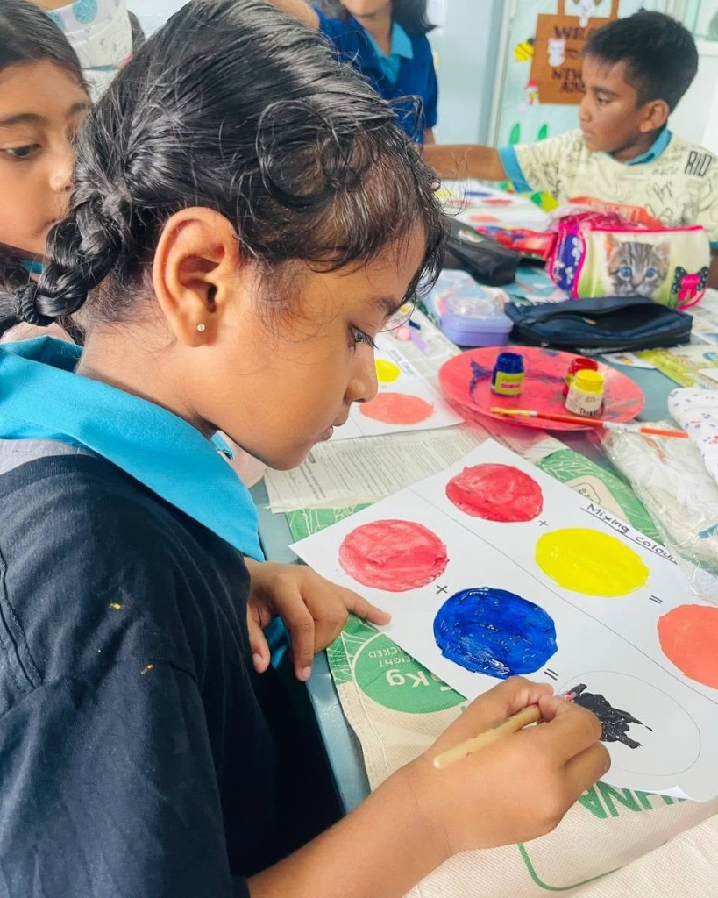

Domain & Project Scope
Literature Survey
Over 70% of existing virtual learning systems are built for higher education, lacking real-time behavioral adaptation, creative visual analytics, or parent-inclusive insights tailored for nursery learners [1, 3].
Key Academic References
- G. Siemens and R. S. Baker, "Learning analytics and educational data mining: towards mutual contemplation," in Proc. 2nd Int. Conf. on Learning Analytics and Knowledge (LAK), pp. 252–254, 2012.
- M. Resnick, Lifelong Kindergarten: Cultivating Creativity through Projects, Passion, Peers, and Play, MIT Press, 2017.
- K. Holstein, B. M. McLaren, and V. Aleven, "Co-Designing a Real-Time Teacher Orchestration Tool to Support Teacher-AI Complementarity," in Proc. 9th Int. Conf. on Learning Analytics & Knowledge (LAK), pp. 255–264, 2019.
- J. L. Epstein, School, Family, and Community Partnerships: Preparing Educators and Improving Schools, Routledge, 2018.
Recent advancements in educational technology and Artificial Intelligence (AI) have introduced adaptive learning systems and learning analytics to monitor student progress and personalize digital instruction [1]. However, most existing platforms—such as standard Learning Management Systems (LMS) and video conferencing tools—are designed for older learners and rely heavily on lecture delivery or retrospective test scores. In early childhood and nursery education, these systems fail to meet young learners' developmental needs. Current behavioral tracking methods typically rely on basic inactivity timers that cannot differentiate between a child who is thinking deeply and one who is genuinely distracted. Furthermore, while hands-on creativity is essential for cognitive growth, current systems treat visual activities as optional hobbies, merely saving drawings without using computer vision or image analysis to interpret children's colors, shapes, and creative expressions [2].
In addition to classroom interactions, existing technologies exhibit major limitations in how analytics are presented to teachers and families. Most analytics dashboards show complex, raw numerical statistics that offer educators little real-time decision support, while lacking explainable AI (XAI) to help teachers understand why a child is struggling or suggest timely instructional interventions [3]. At the same time, parental involvement—a proven cornerstone of early childhood success—is severely neglected, as existing reports are often too technical or limited to basic attendance and grade summaries rather than simple, actionable guidance [4]. Consequently, recent research underscores an urgent need for an integrated early learning environment that unites real-time behavioral monitoring, AI-assisted creative artifact analysis, explainable teacher orchestration tools, and user-friendly parent dashboards to actively support children both in the virtual classroom and at home.
Key Academic References
- G. Siemens and R. S. Baker, "Learning analytics and educational data mining: towards mutual contemplation," in Proc. 2nd Int. Conf. on Learning Analytics and Knowledge (LAK), pp. 252–254, 2012.
- M. Resnick, Lifelong Kindergarten: Cultivating Creativity through Projects, Passion, Peers, and Play, MIT Press, 2017.
- K. Holstein, B. M. McLaren, and V. Aleven, "Co-Designing a Real-Time Teacher Orchestration Tool to Support Teacher-AI Complementarity," in Proc. 9th Int. Conf. on Learning Analytics & Knowledge (LAK), pp. 255–264, 2019.
- J. L. Epstein, School, Family, and Community Partnerships: Preparing Educators and Improving Schools, Routledge, 2018.
Research Gap
An exhaustive systematic literature review revealed six critical unaddressed gaps in existing educational technology platforms:
Multimodal Integration
Limited integration of speech, handwriting, performance & behavior.
Adaptive Learning
Insufficient real-time personalization for individual learners.
Language Localization
Limited Sinhala–English and child pronunciation support.
Handwriting Analysis
Limited dynamic Sinhala handwriting assessment.
Unified Learning
Fragmented support across Mathematics, language & creativity.
Learner Modelling
Limited continuous tracking of progress, difficulties & engagement.
Research Problem & Solution
Proposed Research Problem
Current learning systems are largely static and fragmented, providing limited personalization and localized support for young learners. They do not continuously integrate speech, handwriting, performance and behavioural signals to identify learning needs and adapt learning across language, mathematics and engagement.
Conventional early childhood and primary educational systems rely heavily on uniform, non-adaptive curricula and discrete, post-assessment evaluations. They fail to capture and synthesize dynamic multimodal learner telemetry—including speech articulation nuances, handwritten stroke mechanics, real-time problem-solving latency, and behavioral engagement cues. Consequently, young learners lack timely, localized intervention tailored to their cognitive pace, while educators are deprived of actionable, holistic intelligence needed to guide individual growth across interconnected foundational domains.

Proposed Solution: Multimodal Intelligent Tutoring System
A multimodal intelligent tutoring system that integrates adaptive mathematics, English speech, Sinhala handwriting, and creative learning modules through a unified learner profile and teacher decision-support dashboard.
The system introduces a child-centered, AI-driven educational platform engineered specifically to address early learning needs through five tightly synchronized components:
- Adaptive Mathematics Module: Continuously monitors performance latency, attempt sequences, and behavioral engagement to dynamically adjust difficulty levels and deliver scaffolded mathematical problem sets.
- English Speech & Articulation Engine: Evaluates child speech acoustic patterns, phonetic alignment, and articulatory visual cues to provide gentle, real-time guidance for spoken English pronunciation.
- Sinhala Handwriting Recognition & Tracing: Employs computer vision and stroke geometry analysis to evaluate native Sinhala character formation, providing localized feedback on stroke order, shape conformity, and handwriting motor fluency.
- Creative Learning & Storytelling Hub: Analyzes visual artwork, color palette diversity, and story comprehension activities using computer vision to nurture open-ended creativity without rigid numerical scoring.
- Unified Learner Profile & Teacher Decision-Support Dashboard: Fuses continuous speech, handwriting, performance, and behavioral signals into an integrated learner profile, generating explainable insights and actionable classroom orchestration recommendations for educators.
Main Research Objectives
Four interconnected research pillars engineered to achieve holistic educational empowerment
1. Behavior-Adaptive Learning Engine
To design and implement a Behavior-Adaptive Learning Engine that analyzes real-time interaction behavior of nursery students in a web-based virtual classroom and provides adaptive learning insights to improve engagement, learning effectiveness, and teacher awareness.
2. Creativity-Driven Digital Learning Module
The objective of this component is to develop a creativity-driven digital learning module that allows nursery students to participate in drawing, coloring, and visual storytelling activities while enabling AI-based analysis of student artwork.
3. AI Teacher Insight & Intervention Engine
Develop an AI Teacher Insight & Intervention Engine that analyzes engagement indicators and learning activity data to detect learning difficulties and generate real-time teaching recommendations.
4. Parent-Integrated Analytics Portal
The objective of this component is to develop a parent-integrated analytics portal that converts complex classroom learning data into simple visual insights, allowing parents to easily monitor their child’s engagement, participation, and learning progress in the AI-based virtual classroom.
Methodology
End-to-End System Architecture & Multimodal Learning Pipeline
System Architecture & Pipeline Dataflow
Nana Piyasa orchestrates a multimodal intelligent tutoring ecosystem through an end-to-end dataflow that transforms live multi-sensory signals into tailored learning pathways:
Engages Children, Teachers, and Parents via an intuitive web interface that captures multi-modal inputs—live webcam feeds, microphone speech, stylus/touch canvas strokes, and quiz responses.
Handles secure authentication, request routing, and microservice coordination to stream data synchronously and asynchronously to the dedicated AI processing engines.
Math Adaptive Module
Dataflow: Webcam & Answer Capture → Emotion & Timing Analysis → Adaptive Paper Generated → Mastery Scoring → Next Question Output.
English Speech Module
Dataflow: Audio & Video Capture → Noise Cleaning → Speech-to-Text → Prosody Analysis → Phoneme Alignment & Diagnostic Report.
Pre-School & Grade 1
Dataflow: Canvas Input (Trace/Color/Draw) → Activity Scoring → Pose & Stability Monitoring → Skill Index Aggregation → Creative Record Output.
Sinhala Handwriting Module
Dataflow: Canvas Drawing → CNN Classification → Chamfer Distance Matching → Multi-Criteria Tracing Score → DKT Mastery Update.
Delivers live Explainable AI (XAI) difficulty alerts and actionable pedagogical recommendations to teachers via the Integrated Decision Support Teacher Dashboard, while persistently recording continuous cognitive mastery curves in the Database.
Technologies Used
Enterprise-grade artificial intelligence frameworks, libraries, and full-stack web technologies utilized across the platform:
Python 3.10+
PyTorch
React 18 & Vite
Node.js & Express
FastAPI Microservices
MongoDB Atlas
OpenCV Computer Vision
Librosa DSP
Faster-Whisper ASR
MediaPipe Pose
OpenAI CLIP ViT-B/32
face-api.js (TinyFace)